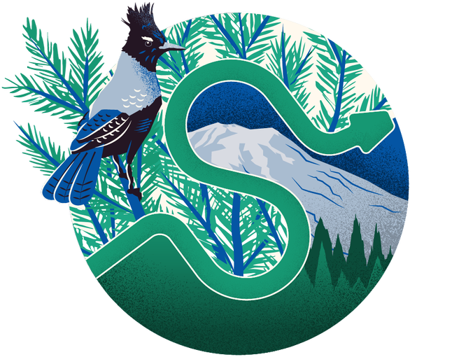
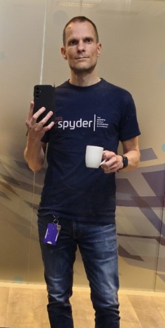

SciPy 2024: My first SciPy conference#
This July 2024, I attended my first SciPy conference in Tacoma, Washington (US 🇺🇸).
{kind=link}
Tacoma, Washington - and in the background, the majestic Mount Rainier#
I had the privilege of representing Codra, a French company specialized in industrial and scientific IT, and present a talk about Spyder, WinPython, and DataLab - as well as a poster on DataLab.
What follows is a brief summary of my experience at the conference, and some personal highlights. All of this is subjective, of course.
About the conference#
{kind=link}
SciPy is a conference gathering attendees from industry, academia, and government to discuss the use of Python in scientific computing. It is the largest conference in the world dedicated to the scientific Python ecosystem, and it has been held annually for more than 20 years. The attendance is international, with participants from all over the world, but mostly from the US. Although the participants are involved in very different fields (from astronomy to biology, from physics to finance), they all share a common interest in Python and scientific computing. Today, the conference is organized by the NumFOCUS foundation, a non-profit organization that promotes open-source scientific software.
The conference is divided into three parts: tutorials (2 days), conference (3 days), and sprints (2 days). I attended only the conference part, which includes talks, posters, lightning talks, a job fair, social events, and open spaces.
{kind=link}
Greater Tacoma Convention Center, where SciPy 2024 was held#
The 2024 edition was held at the Greater Tacoma Convention Center (near Seattle), a modern building with a large ball room for the main talks, and several smaller rooms for parallel sessions.
About the organization#
I was impressed by the quality of the organization: everything was well planned, from the registration process to the talks schedule, and the staff was very helpful and friendly. The conference was well attended, with about 800 participants (all categories combined), and the atmosphere was relaxed and convivial.
Organizers and volunteers were incredibly efficient and responsive, and the conference ran smoothly.
{kind=link}
Ball room at the Greater Tacoma Convention Center - Amazing how smoothly the conference ran with so many attendees!#
Coming from France where the latin culture is predominant, I was impressed not only by the efficiency of the organization but also by the politeness and the respect of the rules by the attendees which clearly contributed to the success of the event.
{kind=link}
Some of the volunteers who helped make the conference a success#
Why attend SciPy?#
{kind=link}
Attendee social event at the Tacoma Art Museum#
There are many reasons to attend SciPy.
Here are the three main reasons I had in mind when I decided to go, and that were confirmed during the conference:
Meeting the community and networking: I had the opportunity to meet in person many people I only knew online, such as the Spyder or Jupyter developers. Meeting people in person unlocks new opportunities for collaboration or simply for sharing ideas and experiences. The informality of the conference also makes it easier to approach people you don’t know and start a conversation. Certainly, this can be continued and developed further online, but it cannot be replaced by virtual interactions.
Learning: I attended many interesting talks about Python, scientific computing, or data science, and learned a lot from them. Even this cannot be fully replaced by watching the talks online (I would never have watched so many talks online in a row). First, the interaction with the speaker and the audience, the possibility to ask questions, and the discussions that follow the talk are invaluable. Second, the fact that you are there, your agenda has been cleared for the conference (there is absolutely no chance that my agenda would have been cleared for accessing the same amount of content online), and you are surrounded by people who share the same interests, makes it easier to focus on the talks and to absorb the information.
Presenting: I presented a talk about Spyder, WinPython, and DataLab, and a poster on DataLab, and received positive feedback from the audience. Let me develop a bit more on this point, in the next section.
Introducing DataLab at SciPy#
{kind=link}
Introducing DataLab at SciPy 2024#
{kind=link}
One third of my motivation for attending the conference was to present my talk regarding 15 years of scientific Python coding adventures, and to introduce DataLab, the latest and new project I’m involved in. DataLab is an open-source platform for signal and image processing that was designed to meet two traditionally antagonistic requirements: customizable scientific processing software (it is extendable using plugins, macros and remote-control with Python scripts) and industrial-grade software (it is designed to be used in production environments, with a focus on maintainability and robustness). Combined with your IDE (preferably Spyder, but it can be any IDE) or your Jupyter notebook, it provides a complete solution for scientific data processing, because it communicates with your IDE or notebook directly from within your Python code (two lines of code are enough to connect your Python code to DataLab). So you may prototype your processing pipelines or debug your applications even quicker than before, by leveraging the power and ease of use of DataLab with the flexibility and interactivity of your IDE or notebook.
Another singularity of DataLab is that it is validated on two fronts: on one hand, it is functionally validated with 200+ automated tests, and on the other hand, it is scientifically validated so that users can trust the results it provides. See more about DataLab’s validation process here. And when we test it, we test it on a lot of different platforms: Windows 7/10/11, Linux (CentOS 8, Ubuntu 22.04, Debian 12) and macOS.
A good sign of robustness is also that a Debian package is available for DataLab, and that it is used in production environments by some of our customers.
Let’s stop here, I could discuss DataLab for hours, but that’s not the point of this post! 😊
And here is my full talk about Spyder, WinPython, and DataLab:
Some talks I attended#
Here are some talks I attended and found especially interesting (among many others), in chronological order.
Day 1#
Here is a selection of talks I attended on the first day:
Keynote: The Right Tool for the Job by Julia Silge (from Posit, the company behind RStudio and Shiny). Among other things, Julia gave an interesting perspective on how she would handle a team with different technical backgrounds and preferences. She highlighted the fact that forcing everyone to use the same tools can be counterproductive, and that it is better to let people use the tools they are most comfortable with, as long as they are able to communicate and collaborate effectively. The main reason for this is that learning a new tool can be time-consuming and frustrating. It cannot be generalized of course - simply because when a project requires a specific technology (either because of performance, compatibility, or customer requirements), you can’t just say “oh, it’s fine if you use another one as long as you communicate effectively with the rest of the team” - but in the context of a data science team for example, it makes sense.
Dask in Production by Matthew Rocklin (from Coiled): a talk about Dask, a parallel computing library, and its use in production environments. Technical and insightful: Dask is impressive, and Matthew is a great speaker - inspiring! Another talk was echoing this one: Pandas + Dask DataFrame 2.0 - Comparison to Spark, DuckDB and Polars by James Bourbeau (Coiled), another great speaker but with a different style - Coiled has a great team, with a well-polished communication!
Teaching and Learning Scientific Computing in the age of ChatGPT by Ryan C Cooper (from University of Connecticut). Even if the talk was centered on education, it was fascinating to see how AI assistants like ChatGPT can impact the students’ learning experience in a very similar way to workers’ experience. I had an interesting discussion with Ryan after his talk, and I shared with him my experience with introducing AI assistant in the workplace, at Codra. In both cases, the AI assistant can help learning or solving problems as long as it is understood as a tool with limitations and caveats - but that’s another story!
{kind=link}
LPython: Novel, Fast, Retargetable Python Compiler — by Ondřej Čertík#
LPython: Novel, Fast, Retargetable Python Compiler by Ondřej Čertík (from Microsoft) - as I already mentioned in social media, LPython is a very promising project. It is a Python compiler capable of executing Python code faster than CPython, thanks to extreme optimizations. Ondřej brilliantly presented the project and its potential, emphasizing the singular performance of LPython: “if it’s slower than C, it’s a bug” - I like that attitude!
No-Code-Change GPU Acceleration for Your Pandas and NetworkX Workflows by Rick Ratzel and Vyas Ramasubramani (from RAPIDS team at NVIDIA). This talk was about cuDF and cuGraph, two libraries from the RAPIDS suite that provide GPU-accelerated dataframes and graph analytics. The performance gains are impressive… without changing a single line of code! (for example, the
pandasimport is automatically replaced bycudf: no need to change anything in your code).
Day 2#
On the second day, among others, I attended the following talks:
Keynote: Explainable AI for Climate Science: Opening the black box to reveal planet earth by Elizabeth Barnes (from Colorado State University). A fascinating talk about a fascinating subject: climate science. Elizabeth explained how AI can help climate scientists to better understand the Earth’s climate system, while insisting on the importance of explainability (a very illustrative example was given: a model recognizing horses in pictures but that was actually trained on samples of horses systematically photographed with a specific label in the corner of the picture - the model was actually recognizing the label, not the horses!). She also shown how little initial conditions variations can lead to very different climate predictions, again with very illustrative examples. Elizabeth is certainly used to giving talks, but she is also a gifted speaker.
Making Research Data Flow with Python by Josh Borrow (from Simons Observatory, University of Pennsylvania). This was the first SciPy participation of Josh, and I know that because he told me right before his talk (my own talk was just after his): otherwise, I would have never guessed it because he was so confident and professional. Another great talk, about a framework named librarian that handles data transfer orchestration for Simons Observatory, using Python, FastAPI, PostgreSQL, and Globus.
After that, I gave my own talk: From Spyder to DataLab: 15 years of scientific software crafting in Python. I was not quite satisfied with my performance… but I’m never good enough for myself, so I’m used to it! 😊
Birds-of-a-Feather (BoF) session: What would you like to see in your scientific IDE? by C.A.M. Gerlach (Python and Spyder core developer):
I was really touched by CAM’s introduction: he said something like “We have the creator of Spyder in the room, Pierre Raybaut” - this certainly was perceived as insignificant by most of the attendees, but it had a very singular meaning for me, as I was suddenly getting conscious of the impact of my work on the community. I was also very happy to see that the Spyder community is so active and that the project is in good hands (I’m of course including Carlos Córdoba in this statement, who is the current maintainer of Spyder).
This BoF gathered in the same room people from different backgrounds (researchers, engineers, data scientists, students, etc.) and with different needs and expectations regarding their scientific IDE (adepts of Jupyter, Spyder, VSCode, …). Many interesting ideas were shared - for example, the relevance of AI assistants in the IDE which surprisingly (for me) was not a consensus among the attendees. Unfortunately, I assisted only passively to this BoF because I was completely jet-lagged…
Note
Birds-of-a-Feather (BoF) sessions are informal gatherings of people around a specific topic. They are a great way to meet people with similar interests and discuss ideas. This was the first time I attended a BoF session, and I found it very interesting. I hope that I will be able to participate more actively next time!
{kind=link}
anywidget: custom Jupyter Widgets made easy — by Trevor Manz#
anywidget: custom Jupyter Widgets made easy by Trevor Manz (from HIDIve Lab). Trevor presented anywidget, a library for creating custom Jupyter widgets easily that has become the reference in this domain for a few months. Even if I already saw the library in action and was familiar with the demo, this talk was a great opportunity to hear from the maintainer himself and helped realize the impact of this library on the Jupyter ecosystem.
Day 3#
On the third day, I was there only in the morning (I had to leave early to catch my flight). Here is a selection of talks I attended:
Keynote: Particles, People, and Pull Requests by Kyle Cranmer (from University of Wisconsin-Madison’s Data Science Institute). Kyle gave an interesting talk that would be far too long to summarize here. It was dense but very fluid and well-structured. It is amazing to see how much can be done with open-source computing tools when such a vast community is involved towards a common goal. The evocation of ROOT made me smile as I had the opportunity to work with it on a project at Codra a couple of years ago, helping a customer to migrate from ROOT to Python. Tons of other tools, mostly Python-based, were mentioned, but that’s another story!
{kind=link}
Spyder: The Scientific Python Development Environment — by C.A.M. Gerlach#
During the SciPy Tools Plenary, I was positively surprised by the presentation of Spyder by C.A.M. Gerlach: CAM presented the project with such energy and enthousiasm that I was really proud to see that the project I created 15 years ago is still alive and kicking! Again, this situation was almost unreal for me: I was in the audience, listening to someone presenting my own project, and I was so happy to see that the project is in good hands and that the community is so active. Kudos to the Spyder team for keeping the project in such a good shape!
Scikit-build-core: A modern build-backend for CPython C/C++/Fortran/Cython extensions by Jean-Christophe Fillion-Robin (from Kitware). Jean-Christophe presented scikit-build-core, a modern build system for Python C/C++/Fortran/Cython extensions. This talk was as much technical as it was clear. It surely gave me some ideas for improving the build system of some of projects I’m involved in (e.g. PlotPy which has both C++ and Cython extensions).
About Lightning Talks#
That’s an experience in itself!
Lightning talks are short talks (5 minutes) given by attendees about any topic they want. Funny, serious, technical, personal, etc. - anything goes! Judiciously placed at the end of the day, they are a great way to relax and have fun after a long day of talks.
I think I will try and give one next time! I already have some ideas…
Final thoughts#
I had a great time at SciPy 2024, and I’m looking forward to attending the next edition. I certainly learned a lot, met interesting people, and had fun.
But most importantly, I felt part of a community, and that’s what matters the most to me… …no, sorry, most importantly, I got a cool Spyder t-shirt! (thanks to the Spyder team for the gift!)